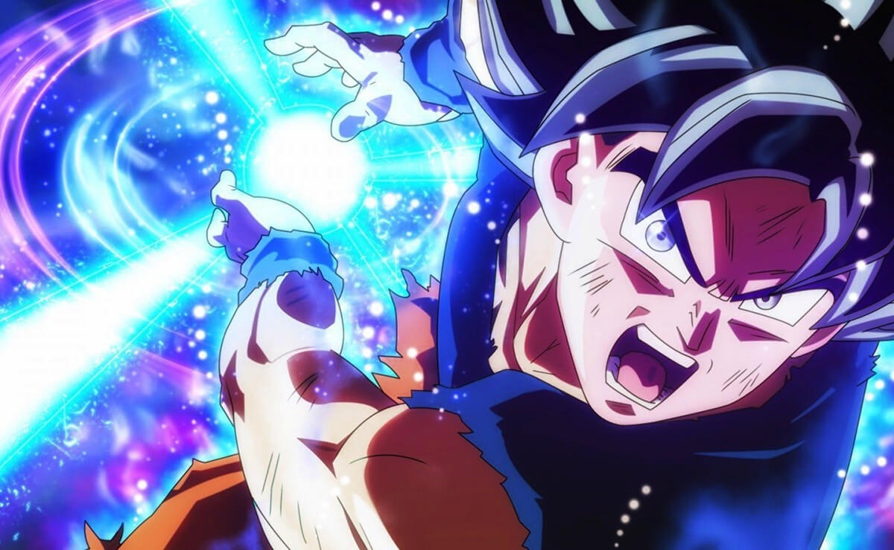
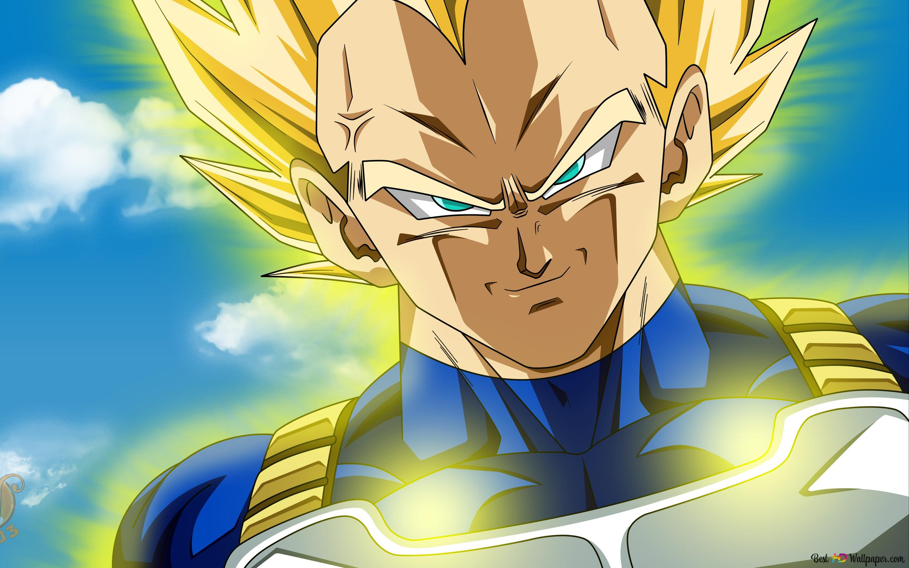
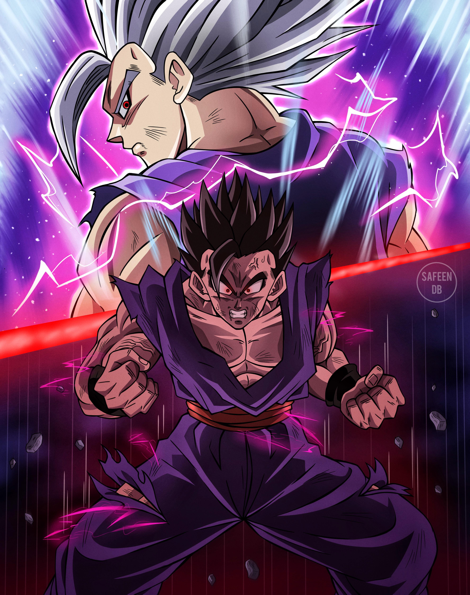

Héroes Legendarios del Anime

Goku, conocido como Kakarotto, es el protagonista principal de Dragon Ball. Nacido en el planeta Vegeta, fue enviado a la Tierra siendo un bebé para conquistarla, pero un golpe en la cabeza cambió su destino, convirtiéndolo en un héroe puro. Criado por el abuelo Gohan, Goku se caracteriza por su bondad, valentía y pasión por las peleas.

Vegeta, el príncipe de los Saiyans, comienza como un villano orgulloso y arrogante, pero evoluciona hasta convertirse en un aliado clave de Goku. Originario del planeta Vegeta, su obsesión por superar a Goku lo lleva a alcanzar grandes poderes, aunque también desarrolla un lado protector hacia su familia y la Tierra.

Gohan, hijo de Goku y Chi-Chi, es un guerrero con un potencial inmenso. A pesar de su naturaleza pacífica y su inclinación por los estudios, Gohan se convierte en un luchador formidable cuando sus seres queridos están en peligro. Su papel en la saga de Cell marcó un hito en la serie.